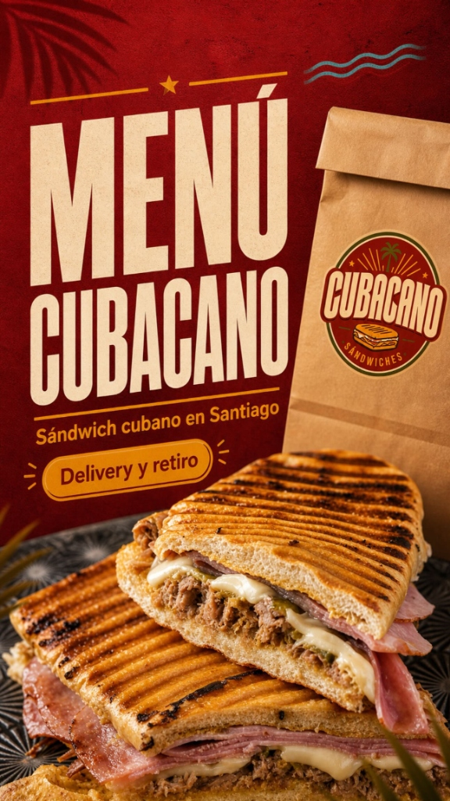

Contenido, publicidad y sistema de pedidos en una sola estrategia.
Tu restaurante puede tener buena comida y aun así perder ventas si nadie lo descubre o si el proceso para pedir es complicado.
El Sistema Astro
Cada pieza conecta con la siguiente. El resultado es un flujo completo desde que alguien descubre tu restaurante hasta que vuelve a comprar.
Contenido que genera hambre y Meta Ads locales para llegar a las personas correctas en tu zona.
La oferta correcta lleva al cliente a WhatsApp Business. Sin fricciones, sin demoras.
Wippy convierte la conversación en un pedido organizado. Menú digital, proceso claro, experiencia profesional.
Con los datos del sistema, activamos remarketing y reactivación de clientes para que vuelvan a comprar.
Tu marca como la primera razón para elegirte.
Visibilidad que genera hambre y conversaciones.
Tu sistema de pedidos incluido.
Astro integra Wippy, un sistema de pedidos diseñado para negocios que venden mediante WhatsApp. Menos fricción para el cliente, más pedidos para ti.
Estrategias reales para negocios gastronómicos. Resultados que se miden.

Construcción de marca desde cero para una dark kitchen con foco en delivery. Desarrollamos identidad visual, estrategia de contenido, campaña de Meta Ads local y sistema de pedidos con Wippy para simplificar el proceso de compra.
Planes adaptados al momento de tu negocio. Sin contratos eternos, sin sorpresas. Cada plan se ajusta a tus objetivos reales.
Planes desde $199.990 CLP/mes · Inversión publicitaria no incluida
Para negocios que necesitan construir o mejorar su presencia digital.
Qué incluye: Branding o rediseño de marca, estrategia de contenido, diseño de perfiles sociales y sistema de pedidos básico.
Ideal para empezar con una base sólida y profesional.
Para restaurantes que quieren generar clientes de manera constante.
Qué incluye: Contenido mensual, reels, campañas de Meta Ads locales, gestión de WhatsApp Business, Wippy integrado y reporte mensual de resultados.
El plan más elegido por restaurantes que quieren resultados consistentes.
Para negocios que quieren delegar estrategia, contenido, publicidad y crecimiento.
Qué incluye: Todo lo del plan Crecimiento, más estrategia completa, producción audiovisual premium, soporte prioritario y dirección de marca continua.
Para marcas que quieren crecer rápido y de forma sostenida.
¿No sabes qué plan es el correcto para tu negocio?
HablemosCuéntanos sobre tu negocio y analizamos cómo podríamos ayudarte a conseguir más clientes y pedidos.
Quiero hacer crecer mi restaurante